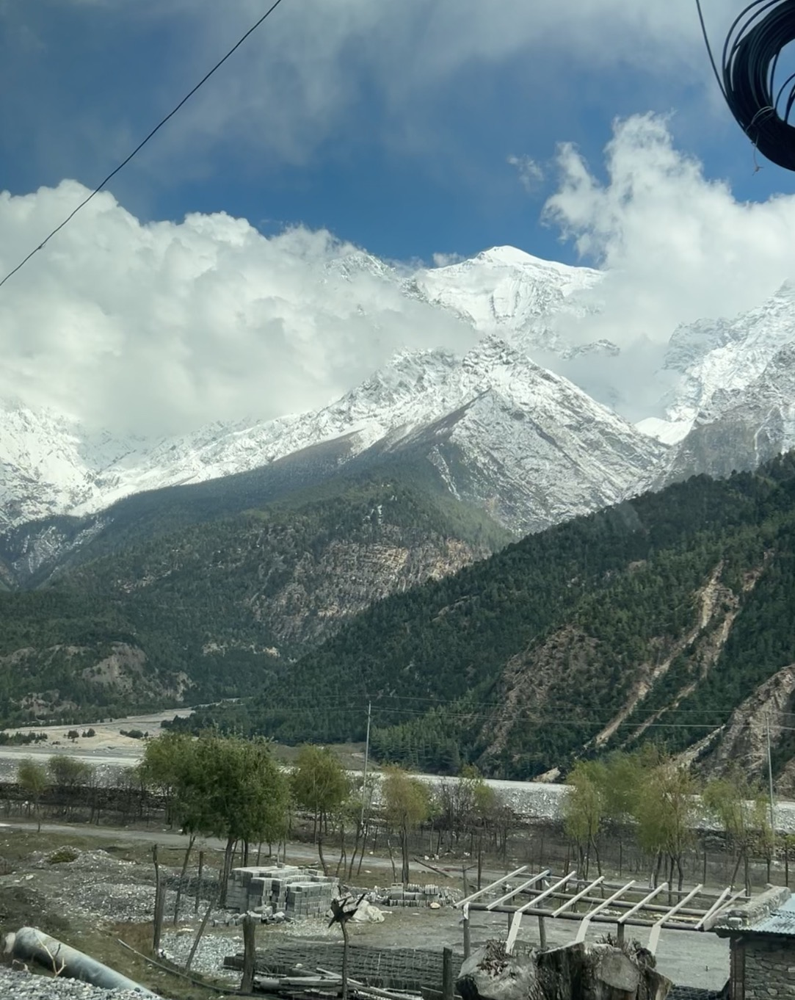

Introduction
Sometimes life gives us moments that are difficult to explain with words. My journey to Mustang was one of those moments. Surrounded by mountains, beautiful villages, fresh air, and endless blue skies, I felt truly grateful to be there.
This journey was not only about visiting a new place. It was about enjoying the moment, appreciating nature, creating memories, and reminding myself how beautiful life can be.
The Beauty of Mustang
Mustang is one of the most beautiful places I have experienced. The huge mountains surrounding the area create a view that feels almost unreal.
The combination of rocky mountains, green forests, traditional houses, white clouds, and bright blue skies made every moment feel special.
I found myself stopping again and again just to look at the mountains and enjoy the view. Sometimes, there is nothing better than simply standing quietly and appreciating nature.

The magnificent snow-covered Himalayan mountains of Mustang.
Living in the Moment
We often become busy thinking about the future. We think about our studies, careers, responsibilities, and the things we still want to achieve.
But this journey reminded me that we should also take time to enjoy where we are today.
Standing in front of these mountains, I was not thinking about anything else. I was simply enjoying the moment. The peaceful surroundings made me feel happy and thankful.
Looking at the mountains and realizing how lucky I am to experience this beautiful world. It was one of those simple moments when I felt completely happy and thought, "I am pleased to live this life."
Traditional Villages
Another beautiful part of Mustang is its traditional villages. The stone houses, narrow paths, mountain surroundings, and simple lifestyle give the region a unique character.
Walking through these villages allowed me to appreciate the peaceful lifestyle and traditional beauty of the region.
Away from the busy city environment, everything seemed slower and calmer. It made me realize that happiness does not always require complicated things.
Lost in the Mountains
The mountains were definitely the highlight of my trip. Seeing the snow-covered peaks rising above the landscape was an unforgettable experience.
The clouds moving around the mountains made the scenery even more beautiful. Every view looked like a picture that I wanted to keep forever.
I took photographs to capture these moments, but some feelings cannot truly be captured in a photograph. They have to be experienced.
Feeling Grateful
This journey made me realize how much there is to be grateful for. Having the opportunity to travel, explore nature, meet people, and experience different places is something I truly value.
Life may not always be perfect, but there are beautiful moments that make everything worthwhile.
Mustang gave me one of those moments.
A Little Reminder to Myself
I want to remember that life is not only about reaching the next goal. It is also about enjoying the journey along the way.
I want to travel more, see more places, meet different people, learn new things, and collect memories instead of only collecting things.
Conclusion
My journey through Mustang was more than just a trip. It was a beautiful reminder to slow down and appreciate life.
The mountains, peaceful villages, fresh air, beautiful skies, and unforgettable views created memories that I will always carry with me.
Looking back at these photographs, I feel happy knowing that I experienced those moments.There is still so much of the world to explore, so many places to see, and so many memories waiting to be made.
Until then, I will continue to appreciate the little moments and be thankful for the journey.